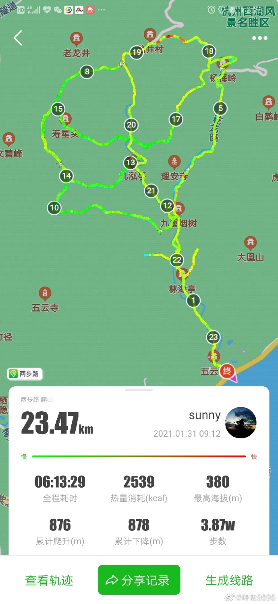
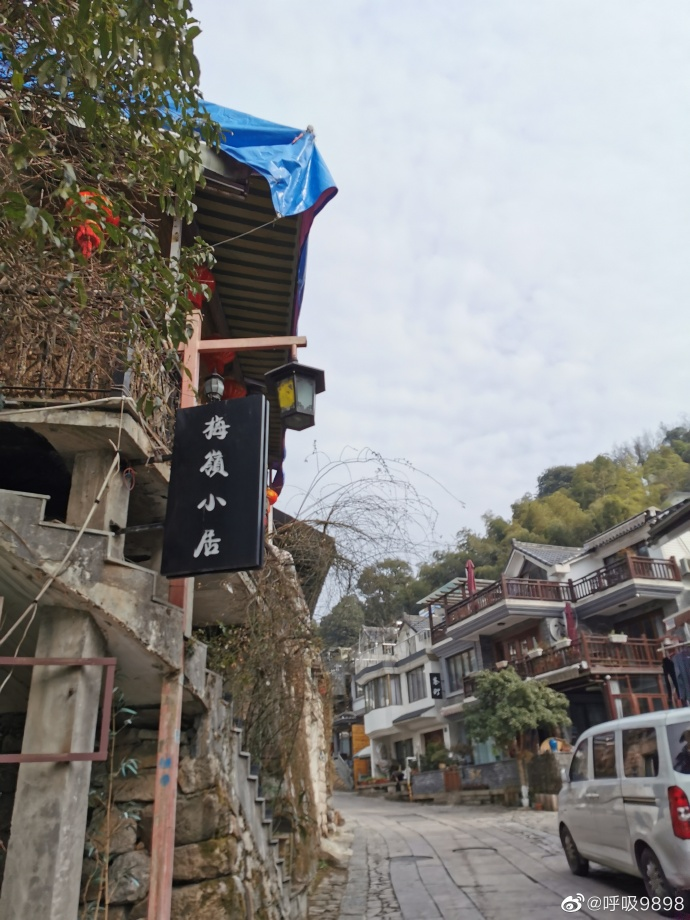
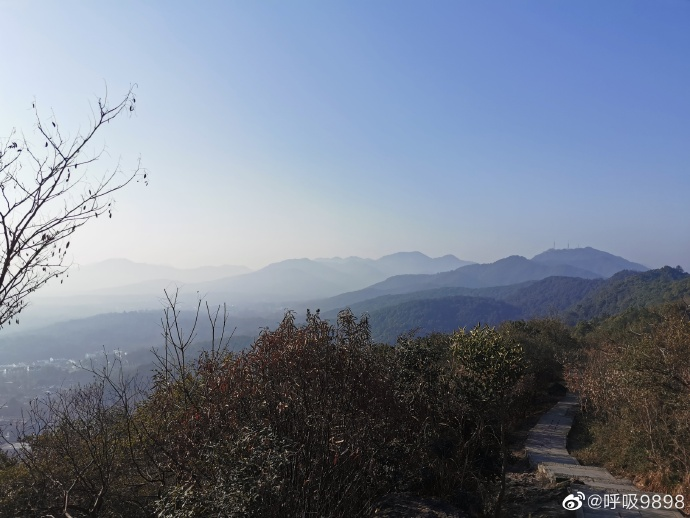
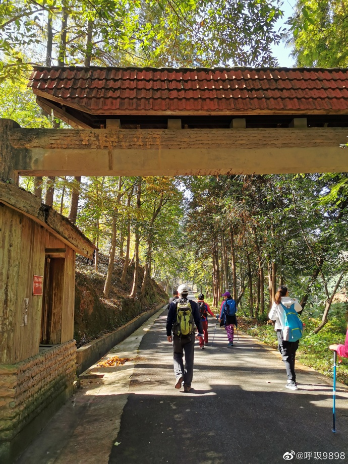
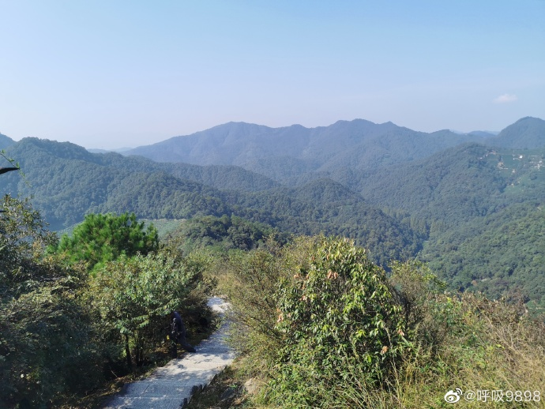
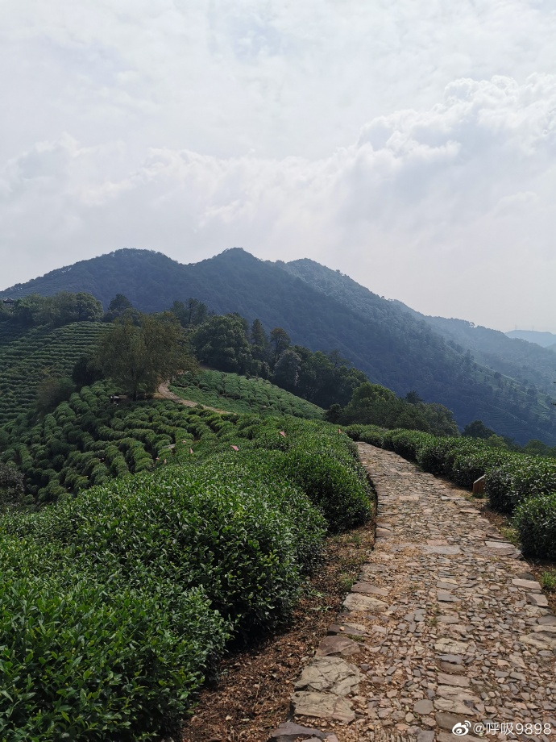

杭州登山路线精选
Contents
在寻找杭州登山路线的过程中，偶然看到了微博网友呼吸呼吸98的微博，她这边提供了很多有趣的登山路线，我都收集了一下。
小野玫瑰
九溪口～林海亭～九溪烟树～理安寺～杨梅岭～翁家山～龙井村～十里琅珰～万林背山～九溪烟树～九弘亭～十里琅珰～寿星头～你我茶园～翁家山～龙井村～九溪十八涧～九溪烟树～九溪口


古荡-雷迪森龙井庄园
古荡～北高峰～灵隐～上天竺～天门山～十里琅珰～棋盘山～雷迪森龙井庄园

风水洞-双灵村
风水洞～西山～牛背岭东～牛背岭中～牛背岭西～石门坞～狗头山～野山头～如意亭～如意尖～双灵村
今天是爬山的好天气，不冷不热，晴朗通透。坐地铁6号线到双浦，走4公里到风水洞，风水洞～西山～牛背岭东～牛背岭中～牛背岭西～石门坞～狗头山～野山头～如意亭～如意尖～双灵村，大约13公里左右。然后乘593路小巴到浙音乐学院，坐地铁回家。有了地铁真是快捷方便。
虎跑-龙井八景
虎跑～贵人阁～弘法坞～九溪烟树～万林背山～十里琅珰～老龙井～龙井八景
初冬，西湖山色更浓。。。周六虎跑～贵人阁～弘法坞～九溪烟树～万林背山～十里琅珰～老龙井～龙井八景，穿九溪游龙井，路程大概13公里。
古荡-香樟雅苑
路线古荡～美人峰～石人岭～九曲亭～严家山～梅家坞～十里琅珰～真迹寺～林海亭～大华山～头龙头～香樟雅苑，18.9公里。

九溪-中天竺
九溪～五云山～云栖竹径～梅灵路～小牙坞～天门山～石人岭～中天竺

西湖群山标毅25公里
西湖群山标毅25公里，用时6小时35分，除去走错路浪费的时间，差不多化时6个半小时。成绩一般，贵人阁至吴山这段足足化了2小时，慢了点，本来应该挤进6小时15分内。

午潮山 环线


虎跑-石人亭

古荡-虎跑
古荡～虎跑。昨天早上雨，但约好了，只有风雨无阻。到了北高峰，雨不见停，下撤到灵隐，雨停，从上香古道进到上天竺，直上天门山、十里琅珰、九溪、虎跑贵人阁。4万步。

伍公山-少年宫
伍公山～凤凰山～玉皇山～九曜山～花港观鱼～苏堤～曲院风荷～北山路～少年宫
Author smasterfree
LastMod 2020-11-11